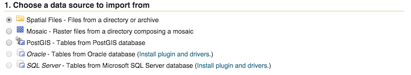
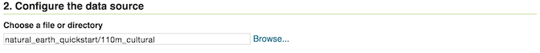
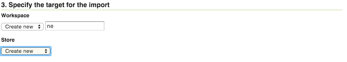
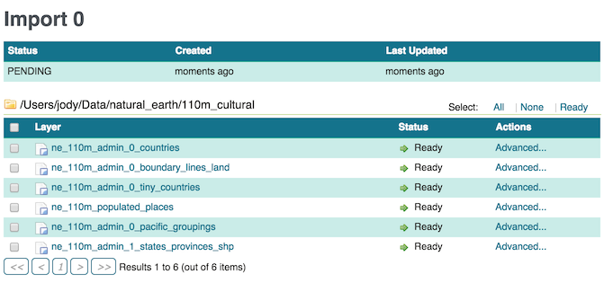
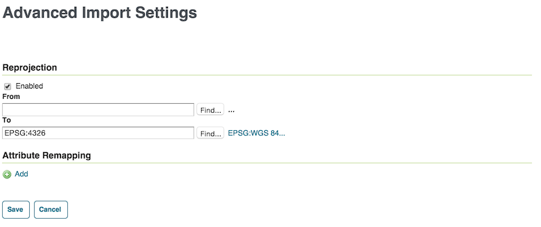
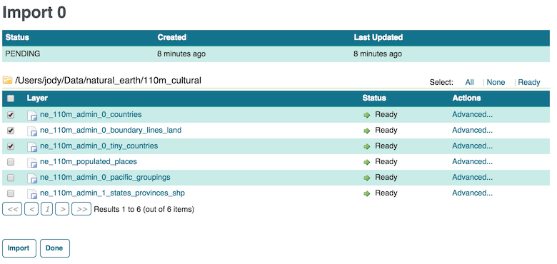
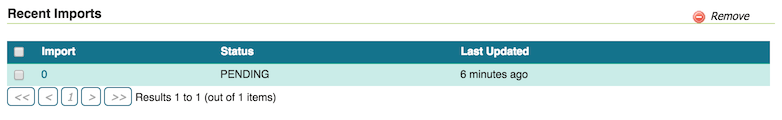

Using the Importer extension¶
Here are step-by-step instructions to import multiple shapefiles in one operation. For more details on different types of operations, please see the Importer interface reference
Find a directory of shapefiles and copy into your GeoServer data directory.
Note
You can always use the Natural Earth Quickstart data for this task.
Log in as an administrator and navigate to the Data –> Import Data page.
For select Spatial Files as the data source.
Data source¶
Click Browse to navigate to the directory of shapefiles to be imported.
The web-based file browser will show as options your home directory, data directory, and the root of your file system (or drive). In this case, select Data directory
Directory¶
Back on the main form, select Create new next to Workspace, and enter ne to denote the workspace.
Note
Make sure the Store field reads Create new as well.
Import target workspace¶
Click Next to start the import process.
On the next screen, any layers available for import will be shown.
Note
Non-spatial files will be ignored.
Import layer list¶
In most cases, all files will be ready for import, but if the the spatial reference system (SRS) is not recognized, you will need to manually input this but clicking Advanced
Note
You will need to manually input the SRS if you used the Natural Earth data above. For each layer click on Advanced and set reprojection to EPSG:4326.
Advanced import settings¶
Check the box next to each layer you wish to import.
Setting the layers to import¶
When ready, click Import.
Warning
Don’t click Done at this point, otherwise the import will be canceled.
The results of the import process will be shown next to each layer.
When finished, click Done.
Note
Recent import processes are listed at the bottom of the page. You may wish to visit these pages to check if any difficulties were encountered during the import process or import additional layers.
Recent imports¶